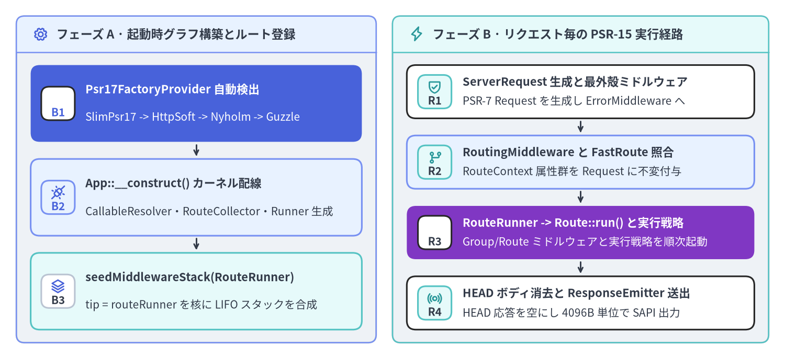
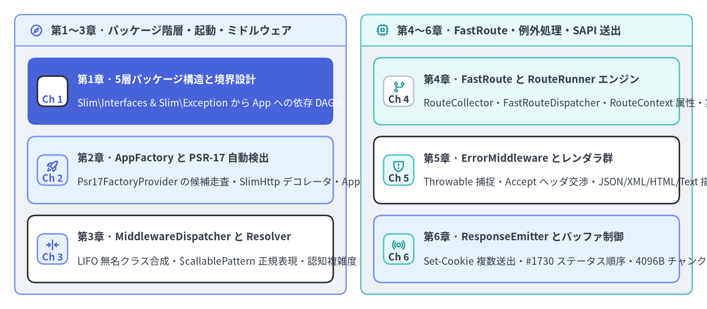

Slim Framework v4.15.3 — 内部アーキテクチャ解説
Slim Framework（v4.15.3 · 全 72 PHP ファイル · 3,149 LOC · 17 契約インターフェース · 全ファイル declare(strict_types=1) 適用）は、単一の設計不変条件を中心に構築された PHP-FIG 標準準拠の HTTP マイクロカーネルです。すなわち、特定の HTTP メッセージ実装や DI コンテナに一切密結合せず、PSR-7 / PSR-11 / PSR-15 / PSR-17 / PSR-3 インターフェース群と Nikic FastRoute をステートレスな同心円状 RequestHandlerInterface パイプラインとして合成するという設計です。本ガイド（非公式）は、Slim 4 ユーザーガイドおよび Slim 4 API リファレンスの姉妹編として、Slim\ 名前空間のソースコードを行番号レベルで解剖します。

Source Code
from drawlib.canvas import save, setup
from drawlib.icons import phosphor
from drawlib.smartarts import CardList, Panel
from drawlib.styles import Colors, Styles
setup(width=192, height=88, dpi=150)
# Left Panel: Phase A — Bootstrap & Route Registration
p_left = Panel(
"フェーズ A · 起動時グラフ構築とルート登録",
"",
style=Styles.Neutral.patch(shape_r=2.0),
header_style=Styles.PrimaryNeutral.patch(shape_line_width=1.2),
text_style=Styles.DarkBold.patch(text_size=11.0),
icon=phosphor.gear,
icon_style=Styles.PrimaryBold,
header_variant="filled",
header_height=8.8,
)
p_left.draw((4.0, 4.0), width=88.0, height=80.0)
lx, lw, lh = p_left.get_content_box((4.0, 4.0), width=88.0, height=80.0, padding=(3.5, 3.2))
cl_left = CardList(
style=Styles.White,
text_style=Styles.DarkBold.patch(text_size=10.5),
description_style=Styles.Dark.patch(text_size=10.0),
badge_shape="rounded_rect",
badge_style=Styles.PrimaryNeutral,
badge_text_style=Styles.PrimaryBold.patch(text_size=10.0),
icon_style=Styles.PrimaryBold,
direction="vertical",
spacing=3.0,
show_arrows=True,
arrow_style=Styles.DarkBold.patch(line_arrow_head_scale=10, line_width=1.4),
)
cl_left.add(
"Psr17FactoryProvider 自動検出",
"SlimPsr17 -> HttpSoft -> Nyholm -> Guzzle",
badge_text="B1",
icon=phosphor.magnifying_glass,
style=Styles.PrimaryFlat,
text_style=Styles.WhiteBold.patch(text_size=10.5),
description_style=Styles.White.patch(text_size=10.0),
badge_style=Styles.White,
badge_text_style=Styles.PrimaryBold.patch(text_size=10.0),
icon_style=Styles.WhiteBold,
)
cl_left.add(
"App::__construct() カーネル配線",
"CallableResolver・RouteCollector・Runner 生成",
badge_text="B2",
icon=phosphor.plugs_connected,
style=Styles.PrimaryNeutral,
)
cl_left.add(
"seedMiddlewareStack(RouteRunner)",
"tip = routeRunner を核に LIFO スタックを合成",
badge_text="B3",
icon=phosphor.stack,
style=Styles.SecondaryNeutral,
badge_style=Styles.White.patch(shape_line_color=Colors.Gray4),
badge_text_style=Styles.DarkBold.patch(text_size=10.0),
)
cl_left.draw(xy=lx, width=lw, height=lh)
# Right Panel: Phase B — Per-Request PSR-15 Hot Path
p_right = Panel(
"フェーズ B · リクエスト毎の PSR-15 実行経路",
"",
style=Styles.Neutral.patch(shape_r=2.0),
header_style=Styles.SecondaryNeutral.patch(shape_line_width=1.2),
text_style=Styles.DarkBold.patch(text_size=11.0),
icon=phosphor.lightning,
icon_style=Styles.SecondaryBold,
header_variant="filled",
header_height=8.8,
)
p_right.draw((96.0, 4.0), width=92.0, height=80.0)
rx, rw, rh = p_right.get_content_box((96.0, 4.0), width=92.0, height=80.0, padding=(3.5, 3.2))
cl_right = CardList(
style=Styles.White,
text_style=Styles.DarkBold.patch(text_size=10.5),
description_style=Styles.Dark.patch(text_size=10.0),
badge_shape="rounded_rect",
badge_style=Styles.SecondaryNeutral,
badge_text_style=Styles.DarkBold.patch(text_size=10.0),
icon_style=Styles.SecondaryBold,
direction="vertical",
spacing=2.6,
show_arrows=True,
arrow_style=Styles.DarkBold.patch(line_arrow_head_scale=10, line_width=1.4),
)
cl_right.add(
"ServerRequest 生成と最外殻ミドルウェア",
"PSR-7 Request を生成し ErrorMiddleware へ",
badge_text="R1",
icon=phosphor.shield_check,
)
cl_right.add(
"RoutingMiddleware と FastRoute 照合",
"RouteContext 属性群を Request に不変付与",
badge_text="R2",
icon=phosphor.git_branch,
style=Styles.PrimaryNeutral,
)
cl_right.add(
"RouteRunner -> Route::run() と実行戦略",
"Group/Route ミドルウェアと実行戦略を順次起動",
badge_text="R3",
icon=phosphor.play_circle,
style=Styles.AccentFlat,
text_style=Styles.WhiteBold.patch(text_size=10.5),
description_style=Styles.White.patch(text_size=10.0),
badge_style=Styles.White,
badge_text_style=Styles.DarkBold.patch(text_size=10.0),
icon_style=Styles.WhiteBold,
)
cl_right.add(
"HEAD ボディ消去と ResponseEmitter 送出",
"HEAD 応答を空にし 4096B 単位で SAPI 出力",
badge_text="R4",
icon=phosphor.broadcast,
)
cl_right.draw(xy=rx, width=rw, height=rh)
save()
Slim 4 の4大アーキテクチャ設計原則
独自の Request/Response クラスやグローバルなサービスロケータを内包するモノリシックな MVC フレームワークとは異なり、Slim v4.15.3 はフレームワークの核を4つの疎結合なメカニズムへと凝縮しています。
- ゼロ設定の PSR-17 プロバイダ自動検出（
Slim\Factory\*）:AppFactory::determineResponseFactory()（Slim/Factory/AppFactory.php:127-157）およびServerRequestCreatorFactory::determineServerRequestCreator()（Slim/Factory/ServerRequestCreatorFactory.php:37-59）は、Psr17FactoryProvider::$factoriesに登録された5つのアダプタ（SlimPsr17Factory、HttpSoftPsr17Factory、NyholmPsr17Factory、LaminasDiactorosPsr17Factory、GuzzlePsr17Factory）をclass_exists()で順番に検査し、slim/httpが導入されている環境では自動的にSlimHttpPsr17Factoryデコレータでラップします。 - 2階層の同心円 PSR-15 ミドルウェアスタック（
Slim\MiddlewareDispatcherとSlim\Routing\Route）: Slim は同一のMiddlewareDispatcherクラスを2つの階層で再利用しています。1つ目はRouteRunnerを中心核（$kernel）としてシードしたアプリケーション全体のスタック（Slim/App.php:71-79）、2つ目はRoute自身を核としてシードしたルート固有のローカルスタック（Slim/Routing/Route.php:140）です。add()呼び出しのたびに$this->tipを無名RequestHandlerInterfaceクラス（Slim/MiddlewareDispatcher.php:116-131）で包み込むことで、後入れ先出し（LIFO）の玉ねぎ構造を形成します。 - FastRoute 照合とルート実行の分離（
RoutingMiddleware->RouteRunner）: URI の正規表現マッチ直後にルートハンドラを即座に実行するのではなく、RoutingMiddleware::performRouting()（Slim/Middleware/RoutingMiddleware.php:57-86）がFastRouteDispatcherでRoutingResultsを算出し、不変のRouteContext属性（__route__、__routeParser__、__routingResults__）をServerRequestInterfaceに付与します。これにより後続のミドルウェアがマッチ済みRouteを参照した上で、最内殻のRouteRunner::handle()（Slim/Routing/RouteRunner.php:57-75）がグループおよびルートのミドルウェア群を実行できます。 - コンテンツネゴシエーション対応の例外境界（
ErrorMiddleware->ErrorHandler）:ErrorMiddleware::process()（Slim/Middleware/ErrorMiddleware.php:74-81）が内部パイプラインをtry / catch (Throwable $e)で保護し、完全一致またはis_subclass_of()による例外ハンドラ解決を経てErrorHandler::__invoke()（Slim/Handlers/ErrorHandler.php:116-139）を呼び出します。ErrorHandlerはAcceptヘッダを解析し、JSON・XML・HTML・PlainText の各ErrorRendererInterface実装へと描画を委譲します。
| 指標 / アーキテクチャ軸 | Slim v4.15.3 計測値 |
ソース根拠・検証結果 |
|---|---|---|
| ソースファイル数・コード行数 | 72 ファイル · 3,149 LOC |
Slim/ 配下（72 クラス/インターフェース、311 メソッド、平均 43.7 LOC/ファイル） |
厳密型宣言（strict_types） |
100%（72 / 72 ファイル） |
Slim/ および tests/ の全 PHP ファイル先頭で declare(strict_types=1); を宣言 |
契約インターフェース（Slim\Interfaces\*） |
17 インターフェース |
ルーティング・ディスパッチ・Callable 解決・PSR-17・エラー描画を完全に抽象化 |
HTTP ステータス例外階層（Slim\Exception\*） |
11 クラス |
HttpException -> HttpSpecializedException -> 400/401/403/404/405/410/429/500/501 |
実行時依存パッケージ（composer.json） |
7 パッケージ |
nikic/fast-route: ^1.3 + PHP-FIG 公式 psr/* 契約パッケージ 6 個のみ |
| 実測行カバレッジ（PHPUnit + PCOV） | 99.4%（1,049 / 1,055 文） |
オフライン PHPUnit 441 テスト（1,323 アサーション）、主要 15 モジュール中 13 個が 100.0% |
全6章の構成と対象ソースファイル対応表

Source Code
from drawlib.canvas import save, setup
from drawlib.icons import phosphor
from drawlib.smartarts import CardList, Panel
from drawlib.styles import Colors, Styles
setup(width=192, height=84, dpi=150)
p_left = Panel(
"第1〜3章 · パッケージ階層・起動・ミドルウェア",
"",
style=Styles.Neutral.patch(shape_r=2.0),
header_style=Styles.PrimaryNeutral.patch(shape_line_width=1.2),
text_style=Styles.DarkBold.patch(text_size=11.0),
icon=phosphor.compass,
icon_style=Styles.PrimaryBold,
header_variant="filled",
header_height=8.5,
)
p_left.draw((4.0, 4.0), width=90.0, height=76.0)
lx, lw, lh = p_left.get_content_box((4.0, 4.0), width=90.0, height=76.0, padding=(3.5, 3.2))
cl_left = CardList(
style=Styles.White,
text_style=Styles.DarkBold.patch(text_size=10.5),
description_style=Styles.Dark.patch(text_size=10.0),
badge_shape="rounded_rect",
badge_style=Styles.PrimaryNeutral,
badge_text_style=Styles.PrimaryBold.patch(text_size=10.0),
icon_style=Styles.PrimaryBold,
direction="vertical",
spacing=3.2,
)
cl_left.add(
"第1章 · 5層パッケージ構造と境界設計",
"Slim\\Interfaces & Slim\\Exception から App への依存 DAG と結合分析",
badge_text="Ch 1",
icon=phosphor.stack,
style=Styles.PrimaryFlat,
text_style=Styles.WhiteBold.patch(text_size=10.5),
description_style=Styles.White.patch(text_size=10.0),
badge_style=Styles.White,
badge_text_style=Styles.PrimaryBold.patch(text_size=10.0),
icon_style=Styles.WhiteBold,
)
cl_left.add(
"第2章 · AppFactory と PSR-17 自動検出",
"Psr17FactoryProvider の候補走査・SlimHttp デコレータ・App::__construct()",
badge_text="Ch 2",
icon=phosphor.rocket_launch,
style=Styles.PrimaryNeutral,
)
cl_left.add(
"第3章 · MiddlewareDispatcher と Resolver",
"LIFO 無名クラス合成・$callablePattern 正規表現・認知複雑度 26 の解剖",
badge_text="Ch 3",
icon=phosphor.arrows_in_line_horizontal,
)
cl_left.draw(xy=lx, width=lw, height=lh)
p_right = Panel(
"第4〜6章 · FastRoute・例外処理・SAPI 送出",
"",
style=Styles.Neutral.patch(shape_r=2.0),
header_style=Styles.SecondaryNeutral.patch(shape_line_width=1.2),
text_style=Styles.DarkBold.patch(text_size=11.0),
icon=phosphor.cpu,
icon_style=Styles.SecondaryBold,
header_variant="filled",
header_height=8.5,
)
p_right.draw((98.0, 4.0), width=90.0, height=76.0)
rx, rw, rh = p_right.get_content_box((98.0, 4.0), width=90.0, height=76.0, padding=(3.5, 3.2))
cl_right = CardList(
style=Styles.White,
text_style=Styles.DarkBold.patch(text_size=10.5),
description_style=Styles.Dark.patch(text_size=10.0),
badge_shape="rounded_rect",
badge_style=Styles.SecondaryNeutral,
badge_text_style=Styles.DarkBold.patch(text_size=10.0),
icon_style=Styles.SecondaryBold,
direction="vertical",
spacing=3.2,
)
cl_right.add(
"第4章 · FastRoute と RouteRunner エンジン",
"RouteCollector・FastRouteDispatcher・RouteContext 属性・実行戦略",
badge_text="Ch 4",
icon=phosphor.git_branch,
style=Styles.SecondaryNeutral,
badge_style=Styles.White.patch(shape_line_color=Colors.Gray4),
badge_text_style=Styles.DarkBold.patch(text_size=10.0),
)
cl_right.add(
"第5章 · ErrorMiddleware とレンダラ群",
"Throwable 捕捉・Accept ヘッダ交渉・JSON/XML/HTML/Text 描画と PSR-3",
badge_text="Ch 5",
icon=phosphor.shield_warning,
)
cl_right.add(
"第6章 · ResponseEmitter とバッファ制御",
"Set-Cookie 複数送出・#1730 ステータス順序・4096B チャンク転送と OB",
badge_text="Ch 6",
icon=phosphor.broadcast,
style=Styles.PrimaryNeutral,
)
cl_right.draw(xy=rx, width=rw, height=rh)
save()
| 章 | 内部アーキテクチャ解説ページ | 解剖対象の Slim 上流 PHP ソースファイル（./Slim/） |
|---|---|---|
| 1. パッケージ階層と境界設計 | 5層モジュール構造と依存関係分析 | Slim\Interfaces\*（17 ファイル）、Slim\Exception\*（11 ファイル）、Slim\Routing\RoutingResults.php、Slim\Interfaces\DispatcherInterface.php |
| 2. ブートストラップと PSR-17 自動検出 | AppFactory と Psr17FactoryProvider 内部実装 | Slim\App.php、Slim\Factory\AppFactory.php、Slim\Factory\ServerRequestCreatorFactory.php、Slim\Factory\Psr17\*（10 クラス） |
| 3. ミドルウェア玉ねぎ構造と Callable 解決 | MiddlewareDispatcher と CallableResolver 内部実装 | Slim\MiddlewareDispatcher.php、Slim\CallableResolver.php、Slim\Interfaces\CallableResolverInterface.php、Slim\Interfaces\AdvancedCallableResolverInterface.php |
| 4. FastRoute と RouteRunner エンジン | FastRouteDispatcher・RouteRunner・実行戦略 | Slim\Routing\{RouteCollectorProxy,RouteCollector,RouteGroup,Route,RouteContext,RouteParser,RouteResolver,RouteRunner,Dispatcher,FastRouteDispatcher,RoutingResults}.php、Slim\Middleware\RoutingMiddleware.php、Slim\Handlers\Strategies\* |
| 5. 例外処理サブシステムとレンダラ | ErrorMiddleware・ErrorHandler・レンダラ群 | Slim\Middleware\ErrorMiddleware.php、Slim\Handlers\ErrorHandler.php、Slim\Error\AbstractErrorRenderer.php、Slim\Error\Renderers\{Html,Json,PlainText,Xml}ErrorRenderer.php、Slim\Logger.php |
| 6. SAPI レスポンス送出機構 | ResponseEmitter と OutputBuffering 内部実装 | Slim\ResponseEmitter.php、Slim\Middleware\{OutputBufferingMiddleware,ContentLengthMiddleware,BodyParsingMiddleware,MethodOverrideMiddleware}.php |
関連ポータルと上流プロジェクトへの謝辞
- 姉妹ポータル: 実践的なアプリケーション設計、PHP-DI コンテナ統合、認証ミドルウェア、PHPUnit テスト手法については Slim 4 ユーザーガイド および Slim 4 API リファレンス を参照してください。また、PHP AST 静的解析、PCOV カバレッジ検証（
99.4%）、サプライチェーンセキュリティ監査（総合スコア94 / 100・GradeS）については PNI501 診断レポート を参照してください。 - 上流プロジェクトの帰属: Slim Framework は Josh Lockhart 氏によって創設され、MIT ライセンス（
LICENSE-SLIM）のもとで Slim Framework チームおよびコミュニティによって開発・保守されています。公式ドキュメントやリリースノートについては必ず https://www.slimframework.com/ を参照してください。それでは 第1章: 5層モジュール構造と依存関係分析 へ進み、Slim の名前空間階層とインターフェース設計を詳しく見ていきましょう。